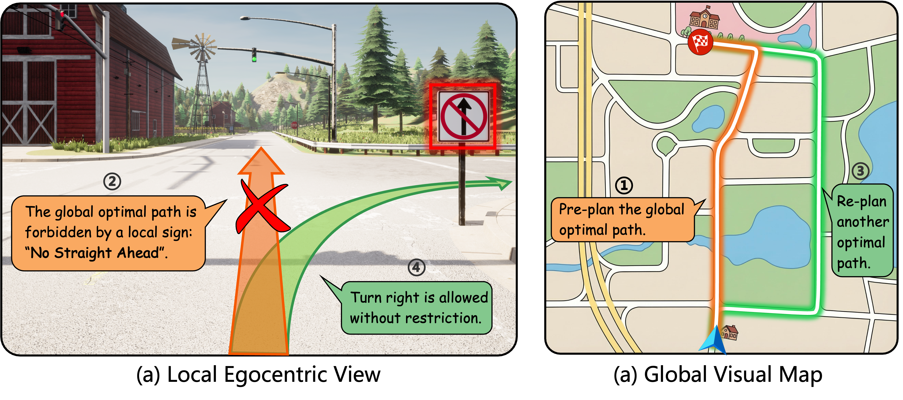
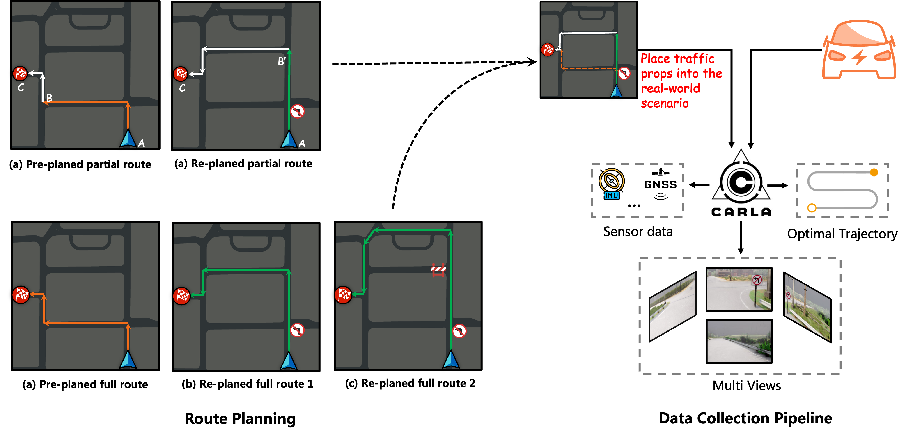

Abstract
Traditional long-horizon point-goal on-road navigation typically employs a two-stage pipeline with global path planning followed by local behavior decision making. However, this approach relies on topological maps, which are inherently prone to information latency and incompleteness. Consequently, in familiar regions susceptible to frequent road condition changes. or in unfamiliar and unstructured areas, pre-planned routes become unreliable. To address these challenges, we propose a novel task coordinating global visual maps with local observations for navigation, in which the former provides road network layout for optimal routing and the latter assesses real-time route feasibility. To facilitate this research, we contribute a large-scale multimodal dataset with comprehensive sensor modalities, building upon which, we design an architecture based on multimodal large language model, achieving a single-stage, end-to-end framework. Extensive experiments demonstrate that our method outperforms conventional approaches, reaching state-of-the-art performance.
Task Introduction

Dataset

Local Junction-Level Route Decision-Making Demos
BibTeX
@article{YourPaperKey2024,
title={Long-Horizon On-Road Navigation with Vision-Map Guidance},
author={Anonymous},
journal={Conference/Journal Name},
year={2025},
url={https://Anonymous.com/Anonymous}
}